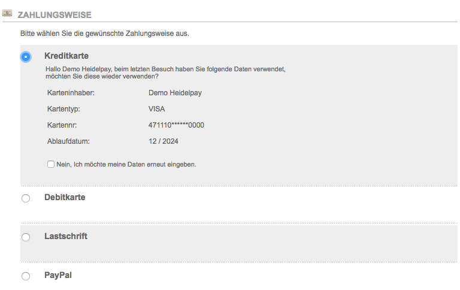

Heidelpay - Credit Card Secure
Setup
The following configuration should be made after Heidelpay has been installed and integrated.
Configuration
Example (for testing only):
$config[HeidelpayConstants::CONFIG_HEIDELPAY_TRANSACTION_CHANNEL_IDEAL] = '31HA07BC8142C5A171744B56E61281E5';
+$config[HeidelpayConstants::CONFIG_YVES_CHECKOUT_ASYNC_RESPONSE_URL] = $YVES_HOST_PROTOCOL . '://' . $config[ApplicationConstants::HOST_YVES] . '/heidelpay/cc-register-response';
This value should be taken from HEIDELPAY
Registration Concept
Payment flow with credit card is divided into two workflows - based on the existing "Registration" and without/with the new "Registration". "Registration" means that customer's anonymized credit card data will be persisted in the database in order to use it again next time, if customer uses the same shipping address. The idea is visually represented in the image below

Checkout Payment Step Display
With the credit card, two payment options are possible - using the already existing registration (if available) or creating a new registration (always available) with the payment frame. CreditCardSecureDataProvider in Yves is responsible for that (getOptions() method). It makes a request into Zed in order to get available payment options, available for the current quote.
-
Payment option - "new registration". The new credit card registration is done inside of the iframe* on the payment step. To be able to display the iframe, Zed makes a "registration" request for the current quote each time customer accesses the payment step. Iframe URL is generated by Heidelpay for one-time usage. Iframe will contain the standard form for entering credit card data.
Please note that iframe doesn't have a submit button, it will be submitted with javascript when customer submits the payment step.
- Payment option - "last successful registration". Zed will try to find an existing registration for current customer, based on the used shipping address ID (so it's available only for the registered customer). If one is found, then it will be added as a payment option. It contains anonymized credit card data and should be displayed as in the image in the Registration Concept section. Each registration has it's "registration number" hash, which is then used to authorize money on the customer's credit card.
* for security reasons, merchant is not allowed (or has to obtain a special permit) to process/store credit card data directly on it's website.
Each payment option has its own template. You can find and customize it under Yves/Theme/default/credit-card/.
Payment Step Submitting
- When customer chooses a new registration (fills in the payment form in the iframe) and clicks "Go To Summary" button, data inside the payment iframe will be serialised and sent as a POST request to Heidelpay payment system*. Heidelpay then processes the request and sends asynchronous POST request to the shop's CONFIG_YVES_CHECKOUT_ASYNC_RESPONSE_URL in Yves (CreditCardController::registrationRequestAction). This request will contain an anonymized customer credit card data and registration number (hash). This data will be persisted in Zed for future customer recognition and for the next step. In response, Heidelpay expects to get a plain URL where to redirect customer. In case of failure it is HeidelpayController::paymentFailedAction(), and in case of success - CreditCardController::registrationSuccessAction(). RegistrationSuccessAction() will find customer registration (through Zed) and set it to quote. Then customer is redirected to summary page**
- When customer chooses the existing registration, it is simply set to quote and customer goes to summary step as usual.
* This javascript behavior can be found and customized under
assets/Yves/js/modules/creditCardFrame.js file.
** This overhead with payment->registrationRequest->registrationSuccess->summary is necessary, because registrationRequest is called asynchronously from the outside, where customer session is not available. Later on, registrationSuccess action is called already where customer session is available, so we can add registration to quote there.
Summary Review and Order Submitting
On the review page, it might be necessary to display customer registration details (like anonymised credit card data, etc). For that use Yves/Heidelpay/Theme/default/partial/summary.twig as a reference and include it to your summary page template.
On "save order" event save Heidelpay payment per order and items, as usual.
When state machine is initialized, an event "send authorize request" will trigger the authorize request. In case of success, the payment system will return a redirect URL for customer, where the payment can be completed. Request and response will be fully persisted in the database (spy_payment_heidelpay_transaction_log).
On "post save hook" event, we check in
transaction log table if the authorize request was sent successfully and if so, we set external
redirect response (URL is obtained from the previous step) and redirect the customer to the payment website,
where customer confirms the payment using 3D secure validation and so on.
Below is the code sample from HeidelpayPostSavePlugin:
/**
* @method \SprykerEco\Zed\Heidelpay\Business\HeidelpayFacadeInterface getFacade()
* @method \SprykerEco\Zed\Heidelpay\Business\HeidelpayBusinessFactory getFactory()
*/
class HeidelpayPostSavePlugin extends BaseAbstractPlugin implements CheckoutPostCheckPluginInterface
{
/**
* @param \Generated\Shared\Transfer\QuoteTransfer $quoteTransfer
* @param \Generated\Shared\Transfer\CheckoutResponseTransfer $checkoutResponseTransfer
*
* @return void
*/
public function execute(QuoteTransfer $quoteTransfer, CheckoutResponseTransfer $checkoutResponseTransfer)
{
$this->getFacade()->postSaveHook($quoteTransfer, $checkoutResponseTransfer);
}
}
On payment confirmation, response is sent to the Heidelpay and Heidelpay makes an asynchronous POST request to the shop's "CONFIG_HEIDELPAY_PAYMENT_RESPONSE_URL" URL (Yves), with the result of payment (see HeidelpayController::paymentAction()). This is called "external response transaction", the result will be persisted in spy_payment_heidelpay_transaction_log as usual.
The most important data here - is the payment reference ID which can be used for further transactions like capture/cancel/etc.In the response Heidelpay expects an URL string which defines where customer has to be redirected. In case if customer successfully confirmed payment, it should be a link to checkout order success step, in case of failure - checkout payment failed action with error code (See See HeidelpayController::paymentFailedAction() and Heidelpay - Workflow for Errors section). Heidelpay redirects customer to the given URL and payment process is finished.
Capture the money - later on, when the item is shipped to the customer, it is time to call "capture" command of the state machine to capture money from the customer's account. It is done in CapturePlugin of the OMS command. In the provided basic order state machine for CreditCardSecureAuthorize method, command will be executed automatically, when order is manually moved into the "shipped" state. Now order can be considered as "paid".
See also:
- Payment Integration - Heidelpay
- Heidelpay - Installation
- Heidelpay - Integration to Your Project
- Heidelpay - Credit Card Secure
- Hedelpay - iDeal
- Heidelpay - Paypal Debit Workflow
- Heidelay - Sofort (Online Transfer)
- Heidelpay - Workflow for Errors
Last review date: Nov. 16th, 2017